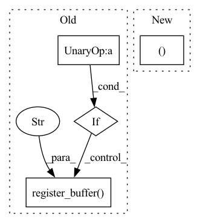

Pattern ID :39816
Before Change
def forward(self, *dimensions):
device = self.device
if not exists(self.rel_pos) or not self.cache_rel_pos:
positions = [torch.arange(d, device = device) for d in dimensions]
grid = torch.stack(torch.meshgrid(*positions, indexing = "ij"))
grid = rearrange(grid, "c ... -> (...) c")
rel_pos = rearrange(grid, "i c -> i 1 c") - rearrange(grid, "j c -> 1 j c")
if self.log_dist:
rel_pos = torch.sign(rel_pos) * torch.log(rel_pos.abs() + 1)
self.register_buffer("rel_pos" , rel_pos, persistent = False)
rel_pos = self.rel_pos.float()
for layer in self.net:After Change
// calculate strides
strides = torch.flip(rel_pos_shape, (0,)).cumprod(dim = -1)
strides = torch.flip(F.pad(strides, (1, -1), value = 1), (0In pattern: SUPERPATTERN
Frequency: 3
Non-data size: 4
Instances Fragment ID: 113355760
Project Name: lucidrains/make-a-video-pytorch
Commit Name: b6e0a17c5488b923d884272f7e46170352b0f0d5
Time: 2023-03-18
Author: lucidrains@gmail.com
File Name: make_a_video_pytorch/make_a_video.py
M Class Name: ContinuousPositionBias
N Class Name: ContinuousPositionBias
M Method Name: forward(1)
N Method Name: forward(1)
M Parent Class: nn.Module
N Parent Class: nn.Module
M File Name: make_a_video_pytorch/make_a_video.py
N File Name: make_a_video_pytorch/make_a_video.py
M Start Line: 110
M End Line: 126
N Start Line: 105
N End Line: 142
Before Change
stride_index = torch.tensor(
self.stride[0] - len(state_buffer) - 1 + self.padding[0]
)
if not hasattr(self, "state_buffer") :
self.register_buffer("state_buffer" , state_buffer, persistent=False)
return state_buffer, state_index, stride_index
def clean_state(self):
if hasattr(self, "state_buffer"):After Change
) -> State:
padding = self.make_padding(first_output)
repeat_shape = [self.kernel_size[0] - 1]
repeat_shape.extend((1 Fragment ID: 113355767
Project Name: lukashedegaard/continual-inference
Commit Name: 1e6964a31874287527720453b1c9216ddedd5a01
Time: 2022-11-29
Author: lh@eng.au.dk
File Name: continual/conv.py
M Class Name: _ConvCoNd
N Class Name: _ConvCoNd
M Method Name: init_state(2)
N Method Name: init_state(2)
M Parent Class: _ConvNd,CoModule
N Parent Class: _ConvNd,CoModule
M File Name: continual/conv.py
N File Name: continual/conv.py
M Start Line: 125
M End Line: 135
N Start Line: 133
N End Line: 138
Before Change
super(FixedRevRNN, self).__init__()
if input_count <= 0:
raise UserWarning("No input count given")
if hidden_features % 2:
raise UserWarning(f"Ignoring uneven hidden feature and proceeding as if equal {hidden_features // 2 * 2}")
self.return_sequences = return_sequences
self.delay = delay
self.input_count = input_count
hidden_features = hidden_features // 2
self.hidden_features = hidden_features
self.linear_param0 = torch.nn.Parameter(torch.zeros((depth, 3 * hidden_features, hidden_features)))
self.linear_param1 = torch.nn.Parameter(torch.zeros((depth, 3 * hidden_features, hidden_features)))
self.out_linear = torch.nn.Parameter(torch.randn((1, 2 * hidden_features ** 2, out_features)))
self.register_buffer("hidden_state" , torch.zeros(1, 2 * hidden_features, hidden_features))
self.register_buffer("embedding", torch.ones((input_cases, hidden_features, hidden_features)))
for idx in range(depth):
for sub_idx in range(3):After Change
self.linear_param0 = torch.nn.Parameter(torch.zeros((depth, 3 * hidden_features, hidden_features)))
self.linear_param1 = torch.nn.Parameter(torch.zeros((depth, 3 * hidden_features, hidden_features)))
self.out_linear = torch.nn.Parameter(torch.randn((1, 2 * hidden_features, out_features)))
self.embedding = torch.nn.Parameter(torch.randn((input_cases, hidden_features )).mul(0.004))
for idx in range(depth):
for sub_idx in range(3): Fragment ID: 113355754
Project Name: homebrewnlp/homebrewnlp
Commit Name: e6bfdfa67ff9b5477696711d7d570685448ee141
Time: 2021-06-20
Author: 39779310+ClashLuke@users.noreply.github.com
File Name: module.py
M Class Name: FixedRevRNN
N Class Name: FixedRevRNN
M Method Name: __init__(8)
N Method Name: __init__(8)
M Parent Class: torch.nn.Module
N Parent Class: torch.nn.Module
M File Name: module.py
N File Name: module.py
M Start Line: 101
M End Line: 127
N Start Line: 109
N End Line: 132